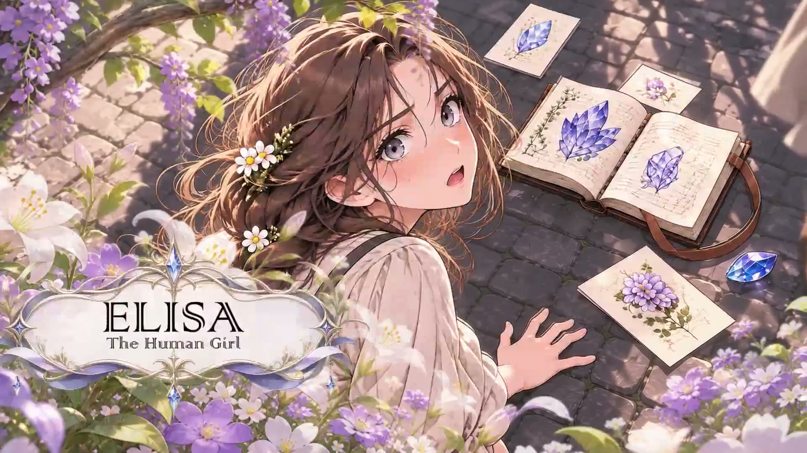
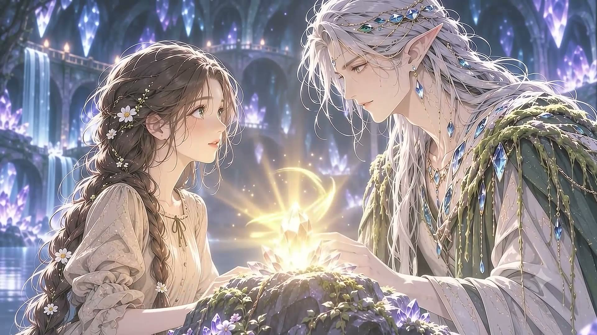
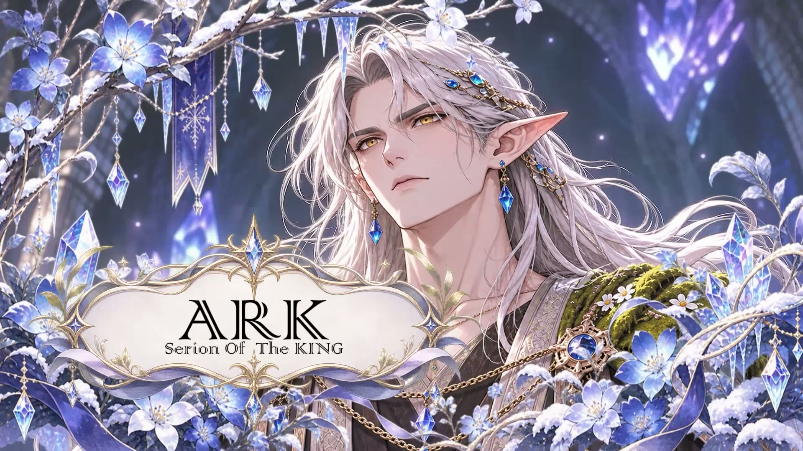

Elisa 엘리사 · 인간 소녀
- Race
- 인간 (트롤의 신부)
- Age
- 17~19세
- Height
- 약 164cm
- Keyword
- 순수함 · 피로감 · 호기심 · 변화
- Point
- 땋은 갈색 머리와 흰 꽃 장식 · 결정 스케치북 · 인간 사회 → 트롤 세계로 변해가는 의상
인간 사회의 소란과 소유욕에 지쳐 스스로 경계를 넘어 트롤의 세계로 들어가게 되는 인간 소녀. 두려움 속에서도 점차 그들의 미학에 매료되어 변화해 갑니다.
Design · Film · Art

Video / Animation
The Girl Who Crafts the Stars.
"그녀는 과연, 어떤 세계를 선택하게 될까요?"
인간 소녀와 결정 왕국의 예술가가 만나는 판타지 애니메이션 — 캐릭터 소개 트레일러
Trailer
Overview
'별을 세공하는 아이'는 아름다움을 만들고 싶었던 인간 소녀 엘리사가, 인간에게 허락되지 않은 지하 결정 왕국에 들어가 빛과 광물을 다루는 예술가 트롤들을 만나는 판타지 애니메이션입니다.
세계관과 캐릭터 설정 보드, 공간·아트 설정, 듀오 장면 보드, 스토리보드까지 직접 기획하고, 이를 바탕으로 1분 길이의 캐릭터 소개 트레일러를 제작했습니다. 배경 음악 역시 Mureka로 직접 만든 오리지널 곡입니다.
Working Title기획 단계의 가제는 '결정의 신부 (The Troll Bride)'였으며, 트레일러 완성과 함께 '별을 세공하는 아이'로 제목을 정했습니다.

Story
Characters

인간 사회의 소란과 소유욕에 지쳐 스스로 경계를 넘어 트롤의 세계로 들어가게 되는 인간 소녀. 두려움 속에서도 점차 그들의 미학에 매료되어 변화해 갑니다.

차갑고 이성적이며, 언어 대신 빛과 손짓으로 감정을 표현하는 미학적 존재. 지하 깊은 곳에서 광물과 빛을 다루며 아름다움을 창조하는 트롤들 가운데 한 명입니다.


World
인간 마을 → 산맥 숲길 → 트롤 왕국 입구 → 중앙 대성당 → 세공 공방 → 거울의 호수 → 왕의 전당으로 이어지는 공간을 설계하고, 건물 구조·소품·재질·식생까지 정리한 배경 & 아트 설정 보드입니다.

Storyboard
트레일러를 12컷으로 나눈 스토리보드와, 첫 만남부터 교감·갈등·협력·선택까지 두 사람의 관계 흐름을 정리한 듀오 장면 보드입니다.


Music
트레일러의 배경 음악은 AI 음악 생성 툴 Mureka로 직접 만든 오리지널 곡입니다. 결정 왕국의 신비로운 분위기와 엘리사의 여정에 맞춰, 잔잔하게 시작해 점점 고조되는 흐름으로 구성했습니다.
Now Playing이 페이지에서는 이 곡이 배경 음악으로 흐릅니다. 화면 오른쪽 아래 버튼으로 켜고 끌 수 있어요.
Stills

.png)